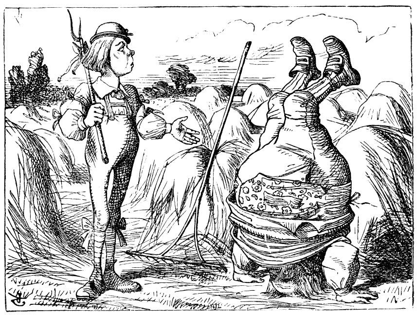

 John Tenniel, “Father William”
Another way to look at the difference between valid and invalid arguments is in terms of the difference between a proof and a counterexample. A proof is a step by step demonstration that the conclusion is a necessary consequence of the premises. To prove that a conclusion validly follows from a set of premises we show in a detailed way how a series of obviously valid steps in reasoning lead us to the conclusion. Take the following argument for example.
Fred is older than Wilma but younger than Betty.
Barney is older than Betty.
So Barney is older than Fred.
Remember that a valid argument is one in which if the premises are true, the conclusion must also be true. So how would we prove that this is the case? Well we just assume that the premises are true and go from there. So here is what a proof might look like:
The first premise states that Fred is older than Wilma and he is younger than Betty. Wilma doesn’t matter here since she isn’t mentioned in the other premise or the conclusion, so let’s just note that this premise clearly states that Fred is younger than Betty. Now this would mean that Betty is older than Fred, since “older” and “younger” are inverses. If I am younger than you then you are older than me no matter who we are since that’s what “younger” and “older” mean. Now since Barney is older than Betty, as the second premise states, he must be older than Fred too, since as we just saw, Betty is older than Fred. This follows from the fact that the relationship “older than” is a transitive relationship3 Not all relationships are transitive of course. Can you think of one that is not, where A having that relationship with B, and B having it with C does not mean that A has the relationship with C? – if A is older than B and B is older than C A has to be older than C since that’s “just what”older than" means. So our conclusion that Barney is older than Fred is clearly a logical consequence of the premises.
That’s all there really is to any proof. We have just unpacked the meaning of what the premises are saying in a way that establishes that they entail the conclusion. We don’t, in other words, have to add any new information to what is already stated in the premises in order to get the conclusion. In more complicated cases it can take much more effort to show this but all proofs are nothing but such a process of showing that the conclusion is thus “contained” in the premises already, which is of course why the truth of the premises would guarantee the truth of the conclusion. In a simple case like this we can almost just see the obviousness of the connection between premises and conclusion, and so it might seem silly to spell things out in this much detail, but in more complicated cases there is more room for error so spelling things out like this is important.
Invalid arguments in contrast are arguments where we would need something more than what is contained in the premises to get the conclusion. No matter how we attempt to prove our conclusion we will always come to some spot where we cannot get any closer to the conclusion. So how do we show this? We use a counterexample, which is nothing but a possible situation in which the premises would all be true and the conclusion would be false. This shows that the argument is invalid, since if it were valid it would be impossible for the premises to be true and the conclusion false at the same time as we just saw. Consider the following argument:
Fred is older than Wilma but younger than Betty.
Barney is younger than Betty and older than Wilma.
So Fred is older than Barney.
Even though we have no idea what these peoples’ ages are (or even if they exist outside of a 1970’s TV cartoon series) we can tell that the conclusion does not have to be true, even if the premises were true. This argument is invalid and we can show this with a counterexample.
| person | age |
|---|---|
| Barney | 36 |
| Betty | 40 |
| Fred | 35 |
| Wilma | 32 |
Notice that if these people had these ages, this would make all of the premises true and the conclusion false. If Fred is 35, Wilma is 32, Betty is 40 and Barney is 36, then it is true that Fred is older than Wilma, but younger than Betty – which is what the first premise claims. It is also true that, given these ages, Barney is younger than Betty and older than Wilma – which is what the second premise claims. But Fred is not older than Barney. In other words, what these ages show that it is possible for the premises to be true and for the conclusion to be false and thus that the reasoning involved in getting to the conclusion is invalid. Even if we had true premises, this would not be enough to guarantee the truth of the conclusion. That is what terrible reasoning is all about.